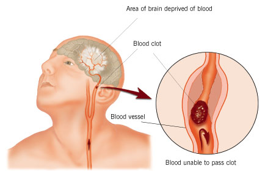

<!DOCTYPE html>
<html lang="pt-BR">
  <head>
    <meta charset="utf-8" />
    <title>O que é o Acidente Vascular Cerebral?</title>
    <meta name="viewport" content="width=device-width,initial-scale=1" />
    
    <link rel="stylesheet" href="http://localhost:4000/css/normalize.css" />
    <link rel="stylesheet" href="http://localhost:4000/css/gridism.css" />
    <link rel="stylesheet" href="http://localhost:4000/css/style.css" />
    <link rel="stylesheet" href="http://localhost:4000/css/pygments.css" />
    <link
      rel="icon"
      type="image/x-icon"
      href="http://localhost:4000/assets/favicon.ico"
    />
    <script src="http://localhost:4000/js/modernizr.js"></script>
    <!--[if lt IE 9]>
      <script src="//html5shiv.googlecode.com/svn/trunk/html5.js"></script>
    <![endif]-->
  </head>
</html>


<body>
  <div class="wrapper">
    <header>
  <h1><a href="/">Acidente Vascular Cerebral</a></h1>
  <p>
    <em
      >O AVC (Acidente Vascular Cerebral) resulta da restrição de irrigação
      sanguínea ao cérebro.</em
    >
  </p>

  <div class="header-banner-large">
    <script async src="//pagead2.googlesyndication.com/pagead/js/adsbygoogle.js"></script>
<!-- acidentevascularcerebral.com-300x250 -->
<ins class="adsbygoogle"
     style="display:inline-block;width:300px;height:250px"
     data-ad-client="ca-pub-1916739305935270"
     data-ad-slot="8843048032"></ins>
<script>
(adsbygoogle = window.adsbygoogle || []).push({});
</script>

  </div>

  <div class="header-banner-small">
    <script async src="//pagead2.googlesyndication.com/pagead/js/adsbygoogle.js"></script>
<!-- acidentevascularcerebral-200x90 -->
<ins class="adsbygoogle"
     style="display:inline-block;width:200px;height:90px"
     data-ad-client="ca-pub-1916739305935270"
     data-ad-slot="1649891636"></ins>
<script>
(adsbygoogle = window.adsbygoogle || []).push({});
</script>

  </div>
</header>


    <section>
      <h1 id="o-que-é-o-acidente-vascular-cerebral">O que é o Acidente Vascular Cerebral?</h1>

<p></p>

<h2 id="o-avc-resulta-da-restrição-de-irrigação-sanguínea-ao-cérebro-causando-lesão-celular-e-danos-nas-funções-neurológicas">O AVC resulta da restrição de irrigação sanguínea ao cérebro, causando lesão celular e danos nas funções neurológicas.</h2>

<p>As causas mais comuns são os trombos, o embolismo e a hemorragia.</p>

<p>Apresenta-se como a 2ª causa de morte no mundo. O AVC é a principal causa de incapacidade neurológica dependente de cuidados de reabilitação e a sua incidência está relacionada com a idade.</p>

<p>Irão ser focados aspectos relativos da patologia, tais como, epidemiologia, causas de AVC, factores de risco, fisiopatologia, tipos de AVC, manifestações clínicas, complicações…</p>

<h2 id="definição">Definição</h2>

<p>A definição de Acidente Vascular Cerebral (AVC) do Dicionário Médico é uma manifestação, muitas vezes súbita, de insuficiência vascular do cérebro de origem arterial: espasmo, isquemia, hemorragia, trombose (Manuila, Lewalle e Nicoulin, 2003).</p>

<p>Acidente Vascular Cerebral é um derrame resultante da falta ou restrição de irrigação sanguínea ao cérebro, que pode provocar lesão celular e alterações nas funções neurológicas. As manifestações clínicas subjacentes a esta condição incluem alterações das funções motora, sensitiva, mental, perceptiva, da linguagem, embora o quadro neurológico destas alterações possa variar muito em função do local e extensão exacta da lesão (Sullivan, 1993).</p>

<h2 id="epidemiologia">Epidemiologia</h2>

<p>O AVC é uma ameaça à qualidade de vida na velhice não só pela sua elevada incidência e mortalidade, mas também pela alta morbilidade que causa, implantando-se frequentemente em pessoas já com problemas físicos e/ou mentais (Resck, Botelho, Herculano, Namorato, Freire, 2004; William Pryse-Phillips, 1995). Também afecta na sua maioria aos idosos, mas existe uma percentagem de 20% dos AVC’s que ocorre em indivíduos abaixo dos 65 anos. É uma patologia que atinge mais a raça negra, especialmente a faixa etária mais jovem (Sullivan, 1993).</p>

      <script async src="//pagead2.googlesyndication.com/pagead/js/adsbygoogle.js"></script>
<!-- acidentevascularcerebral-200x90 -->
<ins class="adsbygoogle"
     style="display:inline-block;width:200px;height:90px"
     data-ad-client="ca-pub-1916739305935270"
     data-ad-slot="1649891636"></ins>
<script>
(adsbygoogle = window.adsbygoogle || []).push({});
</script>

      <hr/>
      <div class="disqus">
        <div id="disqus_thread"></div>
<script type="text/javascript">
    /* * * CONFIGURATION VARIABLES: EDIT BEFORE PASTING INTO YOUR WEBPAGE * * */
    var disqus_shortname = 'acidentevascularcerebral'; // required: replace example with your forum shortname

    /* * * DON'T EDIT BELOW THIS LINE * * */
    (function() {
        var dsq = document.createElement('script'); dsq.type = 'text/javascript'; dsq.async = true;
        dsq.src = '//' + disqus_shortname + '.disqus.com/embed.js';
        (document.getElementsByTagName('head')[0] || document.getElementsByTagName('body')[0]).appendChild(dsq);
    })();
</script>
<noscript>Please enable JavaScript to view the <a href="//disqus.com/?ref_noscript">comments powered by Disqus.</a></noscript>

      </div>
    </section>

    <footer>
  <p><small>© 2020 Acidente Vascular Cerebral - <a href="http://localhost:4000/privacidade">Privacidade e Termos</a></small></p>
</footer>

  </div>
  <script>
  (function(i,s,o,g,r,a,m){i['GoogleAnalyticsObject']=r;i[r]=i[r]||function(){
  (i[r].q=i[r].q||[]).push(arguments)},i[r].l=1*new Date();a=s.createElement(o),
  m=s.getElementsByTagName(o)[0];a.async=1;a.src=g;m.parentNode.insertBefore(a,m)
  })(window,document,'script','//google-analytics.com/analytics.js','ga');

  ga('create', 'UA-23792428-5', 'acidentevascularcerebral.com');
  ga('require', 'linkid');
  ga('send', 'pageview');

</script>


</body>
</html>